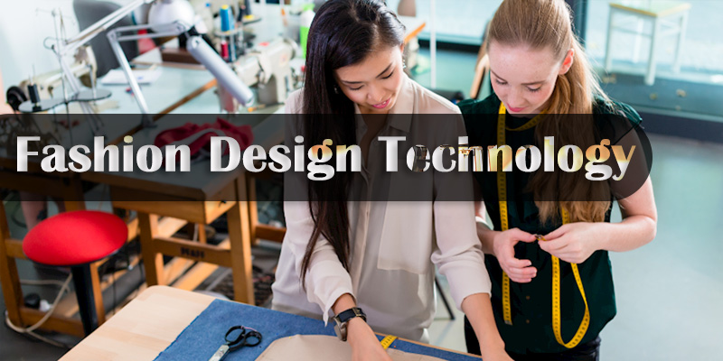
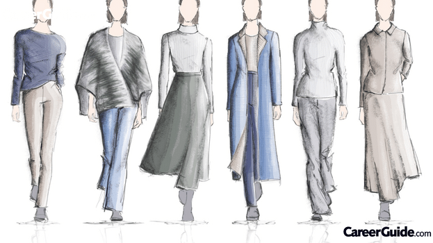

1 / 3

Caption Text
2 / 3

Caption Two
3 / 3

Caption Three
Fashion Technology is a garment making vocational trade. The duration of trade is one year with two semesters of six months each. During the course, students are taught of various aspects like theoretical knowledge and practical skills, which are applied in clothing construction, industrial sewing, flat patternmaking, designing, textiles, fashion sketching, grading, marking and cutting and computerized grading and marking. The trade is an important one as fashion is very crucial is life; everybody likes it. Therefore it opens so many career opportunities in various fields for students. There are so many ITIs and other higher institutes offering courses in this subject.
Students should be passed in 10th class examination or its equivalent from a recognised school board.
Fashion coordinator
Art & Fashion Teacher
Assistant Manager
Assistant Manager product Development
Product Coordinator
Creative Graphics Designer
| Sr.No. | Subjects of Study | |
|---|---|---|
| Trade practical | Trade theory | |
| 1 | Trade knowledg/td> | Familiarization with the Institute |
| 2 | Trade knowledg | Female Sketch (10.5” &12.5”) front,back,3/4 &side |
| 3 | Female Sketch (10.5” &12.5”) front,back,3/4 &side | Computer Knowledge |
| 4 | Developing Embroidery samples | History of Fashion, Basic Embroidery Stitches |
| 5 | Developing Elements of design on sheets Lines | Element design |
| 6 | Developing Elements of design on sheets. | Principles of design |
| 7 | Colour | colour |
| 8 | Draping | Draping |
Directorate General of Employment and Training (DGE&T), New Delhi
I.T.I. Phondaghat, Sindhudurg
Narayan Industrial Training Center, Bareilly
S.E.A. Industrial Training Center, Bangalore
Students should be able to understand the minimum essential mental, physical and behavioural skills necessary.
They also possess skills like problem solving for design-related needs; take measurements and do conversions and do basic math calculations.
They should be able to translate design sketches into flat patterns; create and assess designs on computer and replicate teacher-demonstrated procedures.
Students should be able to communicate effectively to gather and convey information.
Students after passing the trade have bright further study options in form of Diploma/Bachelor Degree courses for enhancing their overall qualification.
After passing trade, students are able to select appropriate fabrics and notions suitable to the garment's design; and drape, draft or manipulate flat patterns to create accurate garment patterns.
The Trade trains students about managing the production of manufacturers’ or designers’ products to correct quantity and quality specifications.